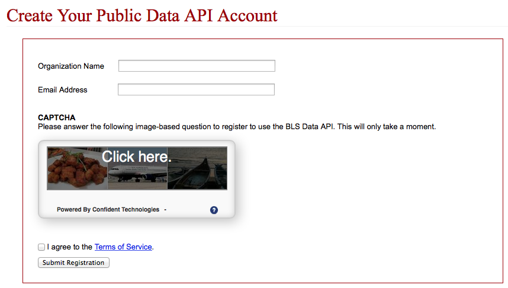
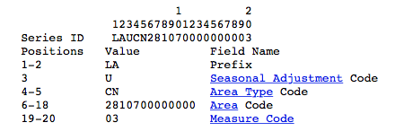
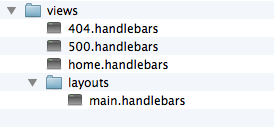
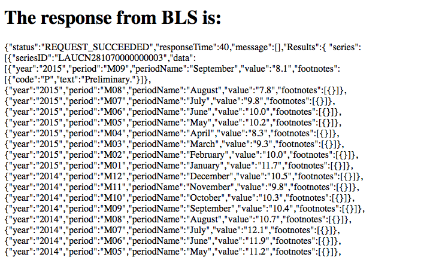
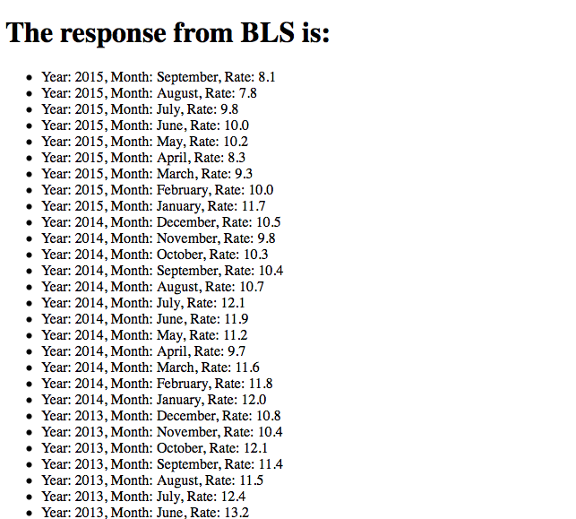

The United States Bureau of Labor Statistics (BLS) is a federal agency which collects economic data and disseminates it to policymakers, economists and the public. The employment and unemployment numbers it produces every month are the BLS's most well known output, however it also collects data on prices, wages, productivity, worker benefits and more.
Through its website, the BLS runs an API to provide public access to its economic data. The API website includes snippets of code in various programming languages to help users make requests of the data. The website, however, does not include any information about how to make requests of the data using Node.js. We are going to use a combination of Node.js tools to display information on a web page in an easy to understand way. This How-To guide will help developers make their own web applications with the BLS API.
The API comes in two versions: a limited API which does not require registration and a more wide-ranging API -- allowing requests of data like percent changes -- which does require registration. For the purposes of this How-To guide, we will use the version which requires registration. If you plan on making more than 50 queries in one day, you'll want to register for the API.
First, navigate to the developer section of the BLS website. Click on the registration button and enter an email address where the API key can be sent. This key will be included in your API requests and allow you access to the data.
The API requires the developer to formulate different "signatures" depending on what type of data the developer would like to retrieve. A "single series" signature retrieves data over one of the last three years. A "multiple series" signature, on the other hand, retrieve's data for more than one year of the last three years. Finally, there is an option to use a signature to retrieve data for one or more years within a time frame of up to the last 20 years. For the purposes of this guide, we will be making a single series request.
The 20-digit "series id" allows the developer encode the specifics of the data request. The id is actually comprised of several different codes, each with its own meaning. To get a better idea of the format, let's analyze how to form a request for unemployment data the area code 28107, which happens to be Midland, North Carolina.
As you can see above, this method is hardly user-friendly. Spaces 1 and 2 are the unemployment data prefix "LA". Space 3 indicates whether the unemployment data will be "U" (unadjusted) or "S" (seasonally adjusted). Spaces 4 and 5 are the Area Type, which designates how large of area the developer wants unemployment data from, ranging from statewide to cities below 25,000 population. Spaces 6 through 18 are reserved for the zip code, while spaces 19 and 20 indicate what we're looking for: the unemployment rate. Other options include employment, size of labor force and more.
To quickly show what our data will look like, let's make a simple request using a URL.
http://api.bls.gov/publicAPI/v2/timeseries/data/LAUCN281070000000003
Because the first part of the URL is constant for each request, our focus is to put together the correct series ID. In this instance, I again used an ID that returns the BLS's unemployment data for Midland, North Carolina.
Here are the first few lines of the API's respose to our request, which is returned in JSON object format:
{"status":"REQUEST_SUCCEEDED","responseTime":44,"message":[],
"Results":{ "series": [{"seriesID":"LAUCN281070000000003",The first two lines detail the status, response time and other information about the request.
"data":[{"year":"2015","period":"M09","periodName":"September","value":"8.1","footnotes":[{"code":"P","text":"Preliminary."}]},
The actual unemployment data begins after the
"data": section. Each of the labels that follow show some data point. In the line above, we see that the
API has returned the "value" or unemployment rate of 8.1 percent. The period where that data was recorded
appears to be "M09", or the 9th month of 2015 (September). At the end of the line, we see a section of footnotes, where
we learn that the 8.1 percent unemployment rate number is preliminary data. Such data is subject to revision, according to the BLS.
{"year":"2015","period":"M08","periodName":"August","value":"7.8","footnotes":[{}]},
{"year":"2015","period":"M07","periodName":"July","value":"9.8","footnotes":[{}]},
{"year":"2015","period":"M06","periodName":"June","value":"10.0","footnotes":[{}]},
{"year":"2015","period":"M05","periodName":"May","value":"10.2","footnotes":[{}]},Here are the next several lines in the result. As you can see, the data is listed in reverse chronological order and is not listed as preliminary data. By default, our request returned data for the last three years, or until January 2013. There are many nested layers to this result, which will become tricky as we seek to manipulate the data (we'll get to that later).
Now that we understand what kind of data we will recieve from our API, lets make an HTTP call using Node.js.
First, let's open blank javascript file in your text editor.
var express = require('express');
var app = express();
var handlebars = require('express-handlebars').create({defaultLayout:'main'});
var request = require('request');
app.engine('handlebars', handlebars.engine);
app.set('view engine', 'handlebars');
app.set('port', 3000);
Here is the beginning of our request. We will be using Express.js, which is a framework to help us build a simple
web application to retrieve our data. Right away you see we include require('express'), which will allow us to use Express.
We then call our express function, which returns an Express application. We'll also be using Handlebars, which is a library that helps
us generate templates. Our handlebars function can be found on line three (there will be more on this later). Finally, we will require the request
library, which will help us make our actual HTTP call to the API. In the next group, we have a number of function calls to the Express application, including engine and set. What we really need to pay attention to
here is our 'port,' which we set to 3000.
Now, its time to make an actual call to the API.
var payload = 'LAUCN281070000000003';
Above, you see we've assigned our series ID for Midland, North Carolina to the payload variable. This will help keep things cleaner
in the call below.
app.get('/',function(req,res,next){
var context = {};
request('http://api.bls.gov/publicAPI/v2/timeseries/data/' + payload, function(err, response, body){
if(!err && response.statusCode < 400){
context.body = body;
res.render('home',context);
} else {
console.log(err);
if(response){
console.log(response.statusCode);
}
next(err);
}
});
});
Let's break this call down. We'll begin with app.get, which takes two arguments: the first being the page to which the GET request
will be sent, and the second a function, which is like an event listener for incoming requests. The function takes three arguments, which include a request, response and next object.
The response object is primarily what we'll want to work with.
Next, let's take a look at the request, which againt takes two arguments.
The first argument is the BLS URL segment, with our our series ID added to the end (in the form of the payload variable).
The second is a function call which takes the arguments (also known as callbacks) of err, response and body.
The err object will hold an error if one exists, response will contain information like the status code,
and the body will contain the information we requested, which in this case is a JSON encoded object.
Inside the request's callback, we want to create an if/then statement. If there is no error and the status code returned in the response is less than 400, we know we've made a successful call. Else, we want to log the error to the console.
After a successful call, we assign the body of our response to the context variable we assigned earlier.
Next, we want to call the render method on the res (response) object. In the call, we include path name 'home', which
is an template file within our application, and the context. This call routes the information to our webpage (more on this later).
app.use(function(req,res){
res.status(404);
res.render('404');
});
app.use(function(err, req, res, next){
console.error(err.stack);
res.status(500);
res.render('500');
});
app.listen(app.get('port'), function(){
console.log('Express started on http://localhost:' + app.get('port') + '; press Ctrl-C to terminate.');
});
After the request, we are almost ready to get our page up and running. The above code can be added to give error messages to users if something goes wrong with the call.
Next, we need to display our data. Fortunately, the Handlebars templating system makes this easy. Let's take a look at the structure of our directory and discuss what it means.
The views folder is located right alongside the javascript file that holds our request. Inside, we've got template HTML pages for the home
screen, the 404 error page and the 500 error page. Even deeper into the directory is the layouts folder, which contains the HTML template that
many of the pages will follow. Let's take a look at that template, named main.handlebars.
<!doctype html>
<html>
<head>
<title>BLS API Demo</title>
</head>
<body>
{{{body}}}
</body>
</html>
Looks pretty bare, right? Well, our code will actually insert the contents of our home.handlebars file into the {{{body}}} of this page.
Let's take a look at the home.handlebars page.
<h1>The response from BLS is:</h1>
<p>{{body}}</p>
This also looks pretty simple. Here, the body of our request is shown in the {{body}}. Remember when we used res.render('home',context);
in our GET request? Here is where it can be displayed.
After creating and filling in handlebars templates for both the 404 and 500 error pages,
it's almost time to launch our web app. We must first install the correct packages (more information on that here).
Once everything is together, its time to run node blsApp.js Then, navigate your browser to the server site, on port 3000.
Let's take a look at what we get:
Now that we've completed a basic request, we can get on to something more advanced. We'll dig through the JSON encoded object and display the unemployment data on our webpage in a much more user friendly way.
Let's revisit our get request. Let's use a loop to isolate the year, month and unemployment rate, then route the information to our home.handlebars page.
app.get('/',function(req,res,next){
var context = {};
request('http://api.bls.gov/publicAPI/v2/timeseries/data/' + payload, function(err, response, body){
if(!err && response.statusCode < 400){
context.body = JSON.parse(body);
var params = [];
for (var i in context.body.Results.series[0].data) {
params.push({'year': context.body.Results.series[0].data[i].year, 'periodName': context.body.Results.series[0].data[i].periodName,
'value': context.body.Results.series[0].data[i].value});
}
context.dataList = params;
res.render('home',context);I've highlighted the additions to our request in bold. I first parse the body (which contains all of our returned data) and assign
it to context.body. I then create an array named params, which will hold our year, month and unemployment rate
data. Finally, I create a for-in loop, which is analogous to a simple (i = 0; i < length; i++) loop. This loop will iterate through our data
and allow us to push exactly what we need into our params array.
For this to work, we need to understand exactly which parts
of our BLS data are objects and which are arrays. For example, the series part of our data is actually an array, despite there being only
one. This exists because you can actually request multiple data series at one time. We, however, only requested one series of data. The data
section of our result is also an array. Here is where everything we want to pull resides.
params.push({'year': context.body.Results.series[0].data[i].year, 'periodName': context.body.Results.series[0].data[i].periodName,
'value': context.body.Results.series[0].data[i].value});Above, let the loop iterate through data[i] while we select the year, month and unemployment rate with the dot operater,
then assign it to a key pair. We do this so it will work with our handlebars HTML template. Then, we assign context.dataList = params;
which we also do to work with our handlebars page. In fact, let's look at home.handlebars now.
<h1>The response from BLS is:</h1>
<ul>
{{#each dataList}}
<li>Year: {{this.year}}, Month: {{this.periodName}}, Rate: {{this.value}}
{{/each}}
</ul>
Here, we will make another loop of sorts to create a list for our data.
As you can see, we use {{#each dataList}} to create the loop. Inside, we use this. to allow for the current year, month and
unemployment rate to be printed for this instance of dataList, before moving to the next one.
Now, its time to relaunch our application. After navigating to the webpage, let's take a look at our result:
As you can see, we've displayed each result in an easy to read way. With a little more styling, you can be on your way to making your own usable web application using the BLS API.